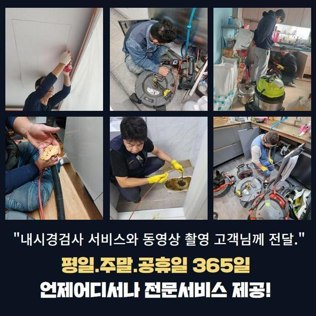
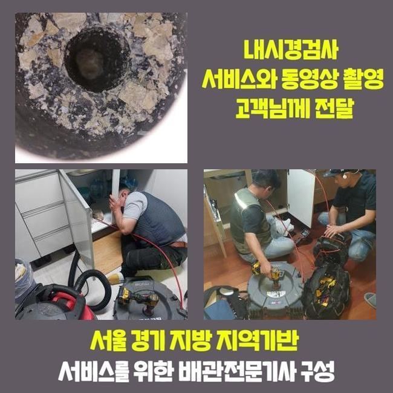
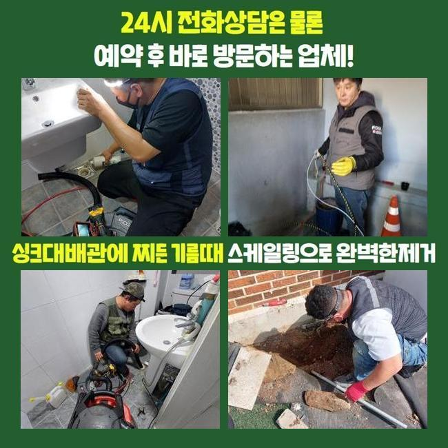
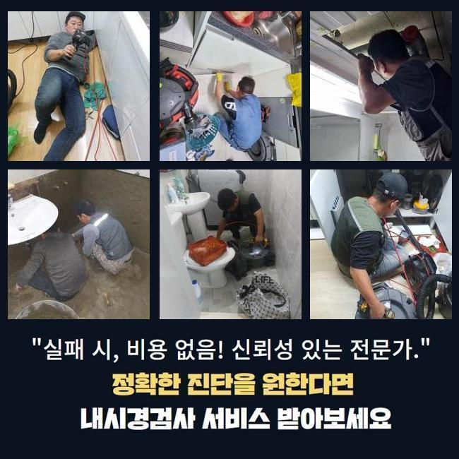
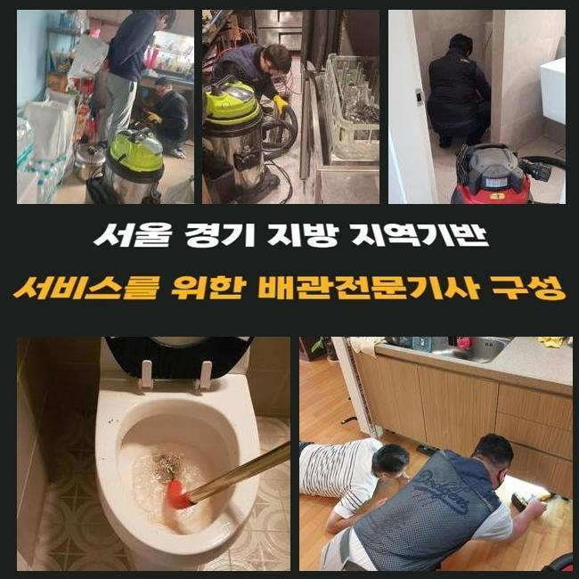
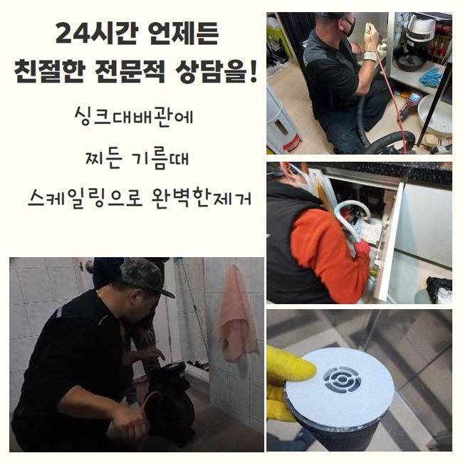
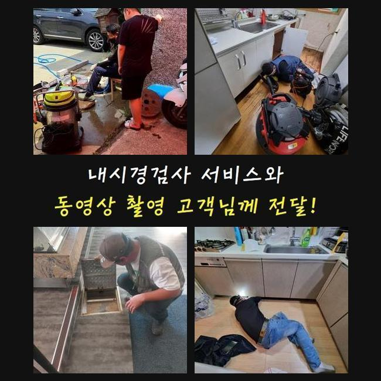

🏠 성남 성남동변기막힘 갈현동 하수구뚫어주는곳 설비업체
성남 남동 싱크대막힘 전문 시공 후기

📋 작업 개요
- 위치: 성남 남동, 남동, 성남
- 서비스 유형: 싱크대막힘, 변기막힘, 하수구막힘, 배관막힘, 누수수리, 역류해결, 뚫는업체, 배관청소, 고압세척
- 작업 일시: 2025. 2. 1. 12:29
- 업체명: 하수구수사대 (010-5615-2118)
🔍 문제 상황
성남 성남동변기막힘 갈현동 하수구뚫어주는곳 설비업체
하수가 정상적으로 나가지 못하면 여러 측면의 어려움들을 경험하게 됩니다
예시로 하나의 주방 내의 싱크대가 잔뜩 오염돼서 물의 흐름이 끊기는 사태도 많이 일어나며 변기설비나 바닥 배수구 베란다 공간에 물이 쌓여서 이용에서의 어려움이 찾아오기도 합니다
아파트 현장에서 의뢰를 받은 상황이라면 개인 세대상의 오류라서 실내에서 각종 기계들을 적용해서 해결을 보고 있습니다
공통적으로 사용하는 관로라면 아파트 단지 차원에서는 문제가 없는지 확인하고 정례적으로 관로 세척을 하기에 아예 막히는 상황은 상대적으로 적습니다
상업적 건물이라면 수도설비에 이상이 생길 확률이 다소 빈번한 편입니다
오늘 알려드릴 현장은 상업용 건물 안에 자리한 주 하수관이 막혀 화장실은 물론 내부의 설비들이 다 중단되어서 빠른 개선이 필요하다며 전화를 주신 것이었습니다
현장을 둘러보았더니 문제소지가 있다고 보이는 메인관로의 구조가 발견되어 작업을 개시했습니다
이 설비에 장애가 생기면 호실 안에 포함된 가지배관의 오류로 단정 짓기는 어려우며 대형 배관 속에서 데미지가 생겼거나 이상 이물질이 차올라서 배수장치가 불량할 상황일 때가 많습니다

🔎 원인 분석
💡 전문가 진단: 정밀 진단 장비를 사용하여 슬러지의 고착 여부를 판명하고 타격/세척 작업을 실시했습니다.
물이 수렴해서 흘러가는 관로부터 세정을 하고 점차 사이즈가 작은 파이프라인까지 세척합니다
천장 내부에 감춰진 수로 설비였으므로 사다리를 타고 올라가서 고쳐내기로 다짐하고 하수도 폐쇄 문제 해결책이 될 장비를 바로 가동하도록 준비시켰습니다
진입부 청소를 완수해도 하단의 배관 파트는 아직 미처리 되었으므로 메인배관을 수리할 시 가운데 부근까지도 빠짐없이 정리해줘야 합니다
배관 덮개를 열어서 여의치 않다면 타공해서 작업을 할 수 있는 상태로 세팅을 마칩니다
배관 용도로 만들어진 내시경기로 접근이 어려운 배관의 현황을 관찰하기 시작했어요
어디까지 더러워진 것인지 방해 요인이 되었던 그 존재에 대해서 기기부터 들이대기 전에 평가해야 작업의 방향성을 정립할 수 있게 됩니다
메인배관 쪽 오류는 배관 자체의 규격이 폭 넓은 형태라서 일반 주택 현장에 찾아갔을 때 주로 구동하게 되는 석션장비를 돌려서는 나아질 수 없어요
튜브 길이가 하단까지 진입하지 못해서 흡입은 당연히 불가해요
기름 슬러지를 분쇄해서 뚫어내는 역할을 마무리 짓는 샤프트기도 단시간만에 완료되지 않으며 진입 홀을 다수 뚫어야해서 곤란할 것 같았어요

🔧 작업 과정
상가 속에 있는 하수구 통수과정이 이뤄지지 못하면 제한이 걸린 구간을 다 치움으로써 설비를 원래대로 고쳐야 합니다
넓은 구간에 적용되는 장비로 곳곳에 퍼져있는 찌꺼기들을 속시원히 없어질 수 있게 집중적으로 청소해서 관로를 티끌없는 상태로 조성해야 하수구의 일련의 문제점들을 처치할 수 있습니다
이물들이 빼곡하게 찬 상태라면 내측을 치우기가 어려우므로 우선은 긴 몸체의 스프링기로 가장 밀집도가 높은 섹션을 포커스를 두고 공략해서 통수가 되게끔 해주고 본단계인 하수구 세척을 들어가기로 결정했습니다
장비를 정확하게 배치하려면 기름때가 차오른 곳에 숨통이 트이게 하는 이동경로를 만들어나갔어요
오늘 보여드린 상가는 여러 종류의 식당 매장들이 운영되고 있었고 조리 도중 나온 기름기가 다수 배출되고 누적되어서 관로 위에 굵은 유막이 뿌옇게 뒤덮여 있었습니다
온수로 씻어보려고 시도해도 기름은 영향을 덜 받기 때문에 수분기가 마르면 석회성 물질로 변화해서 돌덩이처럼 견고한 대상으로 전락합니다
제때 하수구 배관세정을 거치지 않고 내버려두면 시간이 가면서 입구 부근에서부터 점점 사세를 넓혀서 이동이 불가하도록 꽉 메워져서 통수가 아예 달성되지 않을 것입니다
이와 같은 유분막들을 조속히 없애는 기법은 고압세척기기이며 분사력 덕분에 이번에도 순조롭게 번들대던 기름낀 배수로를 정화하는데 성공하게 됐습니다
끈적하니 엉겨붙은 노폐물이 물대포의 영향으로 사라져가는 양상을 배관카메라를 동원해서 검사하면서 진행해나갔어요
짱돌처럼 단단한데다 사이즈까지 우람한 덩어리가 서서히 삭제되어갔고 작은 찌꺼기 파편들만 잔여했더라고요
일단 고압세척을 해야한다고 결정나면 거의 예외 없이 오염물질이 자리한 장소들을 전반적으로 씻어줘야 하수를 못쓸 재막힘과 같은 불상사가 일어나지 않습니다
오랜기간 머물렀을 기름기를 고압세척 작업으로 처리하고 시공 전후 계속 사용하는 카메라로 사이사이를 확인하면서 시공의 질을 테스트했습니다
처음 방문했을 때는 말그대로 빈 공간이 보이지 않도록 불량한 상황이었지만 다수의 기구들을 활용한 처리를 거쳤더니 전과 딴판으로 변화한 말끔한 애프터를 보게 됐습니다
이제는 막힘이 없어야 하니 수도꼭지를 틀어서 물을 흘려보내면서 물이 걸림없이 나가는 모습을 명확하게 거듭 검사를 거쳐서 보고서 잘 뚫렸다고 알려드렸습니다


✅ 작업 완료
장치를 넣기 위해서 타공을 해줬던 구역들은 기록해뒀다가 빈틈을 막아줄 전용필름으로 꼼꼼하게 덮어서 누수 상황이 벌어지지 않게 조치를 취했습니다
이번 현장은 막힘건으로 수많은 컴플레인이 이어지던 건물의 한 매장에서 물이 전혀 이동하지 못하고 싱크대 수돗물의 역류 증세도 생겼던 문제의 장소를 정리하고 작별을 고하게 됐습니다
다뤄야 할 설비가 거대하다면 혼자 수습하는게 불가능한 사안이며 단순하게 접근해서 셀프로 처치하려 하다가 시설물이 데미지를 입는 상황까지 악화될 수 있습니다
주택 아파트 거주지면 어디든 특수한 공간이나 상업시설이라도 적절한 원인 분석과 시공으로 정상기능을 복구시켜드리니 시공받아보시면 좋겠습니다




⚠️ 베란다 누수 및 방수 관리 방법
- ✅ 비가 많이 올 때 창틀 주변이나 아래층 천장에 얼룩이 생기는지 정기적으로 확인해 보세요.
- ✅ 우수관 주변 실리콘 마감이 들뜨거나 깨진 틈새가 있는지 손상 여부를 수시로 체크하세요.
- ✅ 베란다 바닥 타일의 줄눈(메지)이 소실되면 그 틈으로 물이 침투하여 누수가 유발됩니다.
- ✅ 누수 의심 증상 발견 시 방치하면 아래층 손실이 커지므로 즉시 전문가의 진단을 받으십시오.
💡 핵심 정리
- 확실한 장비 작업(내시경 점검 및 샤프트 스케일링)으로 원인을 뿌리 뽑습니다.
- 작업 후 1년 이내에 동일한 부위 재발 시 100% 무상 A/S 서비스를 보장합니다.
- 서울 · 경기 · 인천 전 지역에 24시간 언제든 긴급 출동할 수 있도록 항시 대기 중입니다.
❓ 자주 묻는 질문 (FAQ)
🚨 성남 남동 싱크대막힘 문제로 고민이신가요?
정확한 원인 진단과 확실한 시공으로 재발 없는 해결을 약속드립니다.
24시간 긴급 출동 | 서울 · 경기 · 인천 전지역 | 1년 내 재발 시 무상 A/S